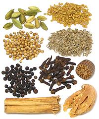

|
Garam Masala, PunjabIndia - Northwest, Punjab - Garam Masala | ||||
| Makes: Effort: Sched: DoAhead: |
5 oz ** 25 min Yes |
This Garam Masala is typical of those used in the northwest of India, where it is applied to a great many dishes. It may be added to a dish during cooking but is more often added at the end of cooking or sprinkled over the finished dish before serving. It is a base set and the recipe may duplicate some of the ingredients to emphasize them. | |||
| Exact formulas for Garam Masala vary by region and even by household. This formula is highly aromatic, rich in flavor and relatively mild (no hot chilis). This recipe doesn't quite fill a 6 ounce spice jar. | |||||
|
|
------ 1 1/4 1/2 2-1/2 ------ 1 2 1/8 5 2 |
--- T c t T --- T t in T |
-- Dry Roast Cumin seeds Coriander seeds Fenugreek seeds Cardamom, green ------------- Cloves Mace Blade (1) Nutmeg Cinnamon (2) Black peppercorns |
Make - (25 min)
|